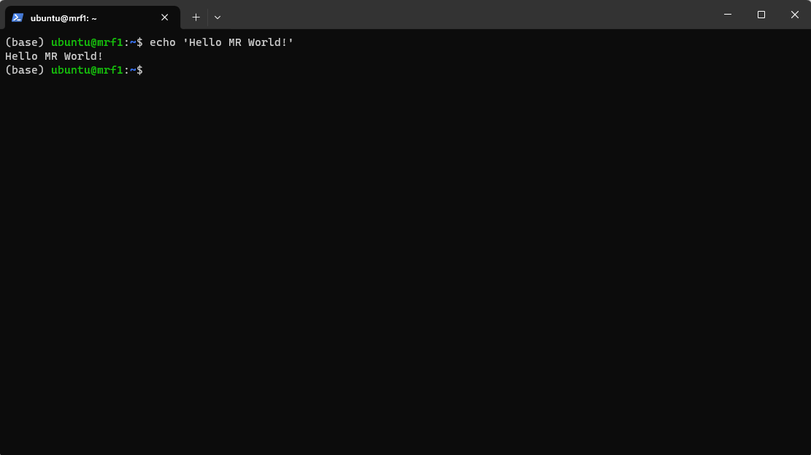
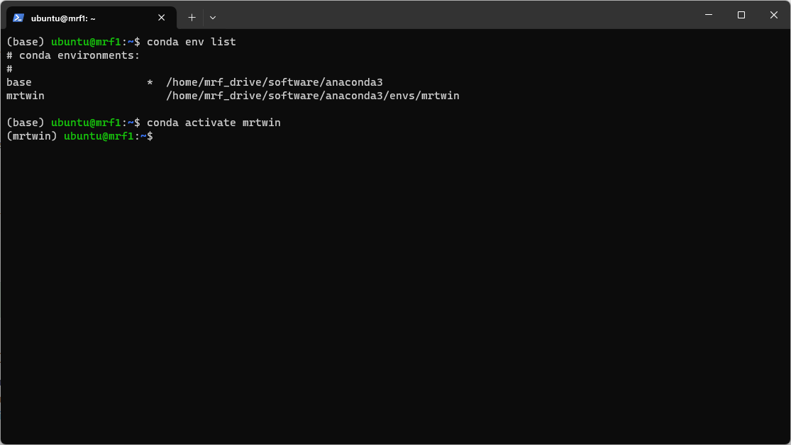

At its core, the MRTWin framework and pipeline can be used to perform
integrated MR sequence development and simulation of the MR images. The
neat part of the pipeline is given by the ability to directly read in
any valid .seq file and simulate the forward process.
The sequence development part is handled via Pypulseq (GitHub
Repository). The simulation part is handled via the
MRZeroCore package (GitHub Repository),
where the ominous 👻 phase distribution graph (PDG) formalism is used.
Peruse Magnetic
Resonance in Medicine Preview site for the soon-to-be-released paper
by Moritz Zaiss et al.
The backend makes use of the tensor machinery and automatic
differentiation engine of PyTorch.
The reconstruction of the data utilizes the torchkbnufft
package (GitHub
Repository) to perform non-uniform Fast Fourier Transform with
Kaiser-Bessel gridding in PyTorch.
1.2 Usage Notes @
julia cluster machines
For ease of usage, we installed the MRTwin pipeline on the
julia cluster machines. First gain access to the desired
machine by following the tutorial written by Max. Basal access is
usually achieved via ssh using the floating IP of the
desired machine.
Host Name
Floating IP
SSH Key Name
mrf1
10.106.246.104
mrf1_key.pem
mrf2
unknown
unknown
:warning:Warning Currently, we all operate as the
same user ubuntu on the various julia cluster
machines. Make sure to not accidentally delete or corrupt any data of
your colleagues 😱. Further, we have to coordinate the resources of the
machines. It is a good idea to check that the machine you intend to use
for your calculations is not currently occupied by a fellow researcher.
Otherwise, resource fighting of the jobs/processes may dramatically slow
down the computations. 🐌 You can check the current resource consumption
in the terminal with the htop command. If either CPU usage
or memory consumption is high, you may have to select another host 💻 or
contact the colleague to stop being a resource hog 🐗.
1.2.1 GUI Method 🌻🦋
You can use the virtual
network computing (VNC) protocol together with a suitable client
(e.g. TigerVNC) to gain GUI access
to one of the host machines. Then open a terminal session inside the
Ubuntu GUI. Then you You should see something like the image below.

Example for terminal layout
Use the condaenvironment activation
tutorial to activate the mrtwin environment. Then you
may use your desired development tool of choice, e.g. Spyder IDE
(command spyder), Jupyter Notebooks (command
jupyter notebook or jupyter nbclassic), VS
Code (command code), etc. pp. to implement and simulate the
new hottest MR sequence! 🔥
1.2.2 Hacker Method 👩💻👨💻
You can avoid the VNC protocol and sending GUI screen content over
the network and setup a complete remote development environment! 🥳 This
may provide a leaner setup and may be more responsive as well.
Hacker Way
Depending on the desired development tools, you will set up the
remote connection differently:
1.2.2.1 Spyder Remote Setup
See the Spyder docs to connect to a remote kernel running on the
julia cluster. Tutorial: Link
The advantages over full GUI transmission are similar to the ones
specified in jupyter notebook
setup.
1.2.2.2 VS Code Remote Setup
Connect to the julia cluster VM via the VS Code remote
module. This allows both classic file-based development and Jupyter
notebook-based development inside VS Code. Tutorial: Link
1.2.2.3 Jupyter Notebook Setup
Upon gaining shell access to one of the julia cluster
machines, you can start a headless Jupyter notebook server with the
commands:
jupyter notebook --no-browser--port=$YOURPORT
for the most recent Jupyterlab notebook experience or
jupyter nbclassic --no-browser--port=$YOURPORT
for the classic Jupyter notebook experience. The server is headless
due to the --no-browser flag and expects connections via a
user-specified port $YOURPORT (i.e. a free port, specified
as an integer between 0 and 65535). The browser-based notebook
experience allows the usage of cool and interactive tools like ipywidgets
to live-modify sequence and simulation parameters! To access the
notebook in your local browser, you have to create a ssh
tunnel that correctly connects your local machine to the remote cluster
machine where the jupyter notebook server runs.
1.2.2.3.1 Creating a
ssh tunnel
When you want to access the jupyter notebook in your
local browser (i.e. the hacker way ;)) then you need to
create a ssh tunnel such that the network traffic is
forwarded to the jupyter server on the remote
julia cluster machine. The command to start the
ssh tunnel is
where the $LOCALPORT is the one you want to access on
your local machine (it is advisable to use
$LOCALPORT == $YOURPORT for ease of use) and
$YOURPORT is the chosen port the
jupyter server is listening to. Use the login credentials
for the mrf cluster machine that were given to you by Max
or Jannik. The arguments do the following: -N makes that no
remote command is executed since the connection is established only for
port forwarding, -f ensures that the tunnel is run
continuously in the background and -L specifies that the
given port on the local (client) host is to be forwarded to the given
host and port on the remote side. Many of these steps can be automated
via the ~/.ssh/config file such that you do not have to
type them again or recall them tediously via your shell history. See
e.g. the ssh
manpages. If everything is working, you can access the
jupyter notebook environment in your local browser under
the address localhost:$LOCALPORT.
1.2.3 Enabling the correct
conda environment
The julia cluster machines should have
conda preinstalled. If not the case, contact Jannik for bugfixing 🐛🧰
purposes. In the bash terminal, you should see the conda
environment prefix, in the above example (base), your user
name (here ubuntu) and the current host name (here
mrf1). Before starting off, you have to activate the
correct conda environment to be able to access all package
elements of the MRTwin. For this, you should activate the preinstalled
environment mrtwin with the command
conda activate mrtwin
A list of all conda environments can be printed via the
command conda env list. The successful activation of the
conda environment is reflected in the changed environment
prefix in front of the user name and host name specification.

Exemplary conda environment
activation
1.3 Help
If you still have problems or open questions, ask Jannik for tech
support